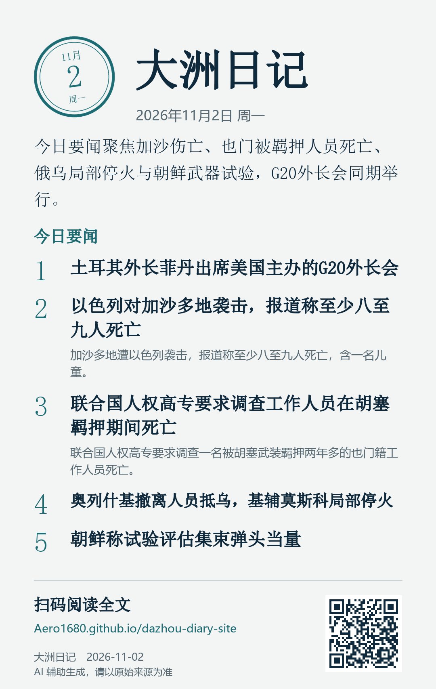

订阅
选一种你习惯的方式，每天读到这份日记。
邮件
每个工作日早上一封，只含当天要闻、风险提示和各大洲小结，打开就能读完。随时可以退订：回复“退订”即可。你的邮箱只用来发送日报，不会用于其他用途。
发邮件订阅微信分享卡片
每天一张竖版图片，长按保存后发到微信群或朋友圈；图上的二维码可以直接打开网站。

打开今日卡片
PDF 日报
一页纸版本，适合打印和转发。
下载今日 PDFRSS
用 Feedly、Inoreader、Reeder 等阅读器订阅这个地址：
https://Aero1680.github.io/dazhou-diary-site/feed.xml